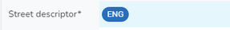

If you wish to add a street that does not already have ESUs such as a Type 1 or 2 street then you would use the Add Street function.
There is an alternate way if you wish to create say a Type 3 street and you wish to use the ESUs that are already assigned to a Type 1 or 2 Street. This is done via the Create Street from ESU function.
Note: Creating a street will also create the Street BLPU.
Add street
•Use the Add Street button (top right of the page beside the Search) to create a new street in your gazetteer. This displays the Street form with the Street tab selected configured with details from the Street template.
•Click on the Street Descriptor Language entry e.g. 
•Enter the street descriptor details such as Name, Locality, Town and Administrative area and click OK. The Locality, Town and Administrative areas should be selected from the list provided as these are configured by an Administrator in the Lookup tables. If you are an Administrator you will also be able to add a new Lookup at this point as an Add icon is displayed if you click in the box e.g.

•If your gazetteer is Bilingual then when you also add the details for the alternate language so select the language at the top of the form e.g.
the language for the current entry is shown in blue.
•If you are a Scottish authority there is an option to Add language version of a Street descriptor if you hover over the ENG entry e.g.
•Make any changes required to the street details. The USRN will be automatically allocated from the next available USRN in the range for your authority, when you click save. Note: If you are an Administrator then you will see an Edit USRN button which will allow you to manually assign a USRN if required.
•If you do not wish to create an ESU at this time then you may populate the Start & End grid reference by clicking the SELECT START button and clicking on the map to position the start of your street. You can then use the SELECT END button in a similar way to position the end of the street. Note: This will actually create a straight line ESU when you click Save.
•If you do wish to add / assign an ESU(s) please see Maintaining ESUs for details.
•You may add ASD to your street - please see Maintaining ASD for details.
•Click Save to create the street. Note: If there are any validation errors found when you click Save then these must be corrected before the street can be created. Please see Street Error Handling for more information.
Create street from ESUs on another street
First you need to find the street whose ESUs you wish to use to create your street. You can use the Search to search for the street. Either select the street from the search results or press enter in the search and select the street from the Explorer.
•Select the ESUs tab
•Select the ESU(s) you wish to use by ticking the boxes for the ESUs in the ESU Explorer and you will see a new toolbar appear e.g.

•Select the Create Street tool.
•Complete the street details as detailed above and click Save to create the street.